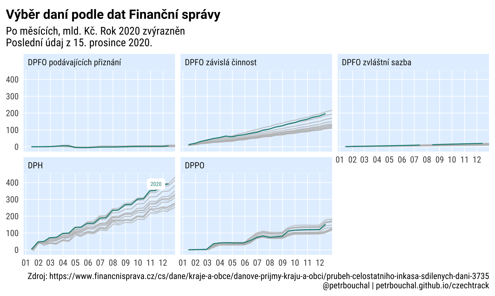

Česká rozpočtová data
Výběr daní
Časové řady
ggplot(all %>%
# filter(nazev == "DPH") %>%
filter(!str_detect(nazev, "hazard|technick|LOTER")) %>%
filter(TRUE),
aes(date_aligned, value/1e9, colour = rok, group = grp)) +
geom_line(aes(group = rok)) +
gghighlight::gghighlight(calculate_per_facet = T, rok == 2020, use_group_by = T) +
facet_wrap(~ nazev) +
theme_schola("scatter", multiplot = T, plot.caption.position = "plot") +
scale_color_viridis_c(labels = scales::label_number(accuracy = 1, big.mark = "")) +
scale_x_date(labels = scales::label_date(format = "%m"), date_breaks = "months",
expand = expansion(c(0.05, 0))) +
labs(x = "den v roce", title = "Výběr daní podle dat Finanční správy",
subtitle = str_glue("mld. Kč, poslední údaj z {latest}. Rok 2020 zvýrazněn"),
caption = "Zdroj: https://www.financnisprava.cz/cs/dane/kraje-a-obce/danove-prijmy-kraju-a-obci/prubeh-celostatniho-inkasa-sdilenych-dani-3735")
Meziroční srovnání
library(scales)
# https://gist.github.com/mikmart/bfbf62839fbdd162b4b88e6d43e0c858
c_trans <- function(a, b, breaks = b$breaks, format = b$format) {
a <- scales::as.trans(a)
b <- scales::as.trans(b)
name <- paste(a$name, b$name, sep = "-")
trans <- function(x) a$trans(b$trans(x))
inv <- function(x) b$inverse(a$inverse(x))
scales::trans_new(name, trans, inv, breaks, format = format)
}
rev_date <- c_trans("reverse", "date")
all_diffs %>%
ggplot(aes(date_aligned, narust)) +
geom_hline(yintercept = 0) +
geom_point(alpha = .6, colour = "red", size = 2) +
coord_flip() +
scale_x_continuous(trans = rev_date, labels = label_date("%b"), n.breaks = 12) +
scale_y_continuous(limits = c(-1, 1), labels = label_percent(suffix = " %")) +
gghighlight::gghighlight(rok == 2020, unhighlighted_params = list(alpha = .3)) +
facet_wrap(~ nazev) + theme_schola("scatter", multiplot = T) +
labs(title = "Meziroční změna výnosu vybraných daní podle období",
subtitle = "rok 2000 zvýrazněn; extrémní hodnoty vynechány.")
Nejnovější dostupné datové exporty Monitoru státní pokladny
library(jsonlite)
library(httr)
library(dplyr)
library(tidyr)
td <- GET("https://monitor.statnipokladna.cz/api/transakcni-data?aktivni=true",
accept_json()) %>%
content(as = "text") %>%
fromJSON()
xx <- td %>%
unnest(dataExtracts, .name_repair = "universal")
xx %>%
group_by(titleCS) %>%
filter(!deleted, year == max(year)) %>%
filter(month == max(month)) %>%
select(titleCS, year, month, filenamePeriod)Naposledy aktualizováno 02. dubna 2020 03:13 CEST.
LS0tCnRpdGxlOiAixIxlc2vDoSByb3pwb8SNdG92w6EgZGF0YSIKb3V0cHV0OgogIGh0bWxfZG9jdW1lbnQ6CiAgICB0b2M6IGZhbHNlCi0tLQoKYGBge3Igc2V0dXAsIGVjaG8gPSBGLCBtZXNzYWdlPUYsIGluY2x1ZGU9RiwgZXZhbCA9IFR9ClN5cy5zZXRsb2NhbGUoIkxDX0FMTCIsICJjc19DWi5VVEYtOCIpCgprbml0cjo6b3B0c19jaHVuayRzZXQoaW5jbHVkZSA9IEYsIHdhcm5pbmcgPSBGLCBtZXNzYWdlID0gRikKCmxpYnJhcnkodGlkeXZlcnNlKQpsaWJyYXJ5KHJ2ZXN0KQpsaWJyYXJ5KGx1YnJpZGF0ZSkKYGBgCgpgYGB7cn0KdGhlbWVfc2Nob2xhIDwtIGZ1bmN0aW9uKGdyaWRsaW5lcyA9IGMoInkiLCAieCIsICJib3RoIiwgInNjYXR0ZXIiKSwKICAgICAgICAgICAgICAgICAgICAgICAgIGJhc2Vfc2l6ZSA9IDExLAogICAgICAgICAgICAgICAgICAgICAgICAgZmFtaWx5ID0gInNhbnMiLCB0aXRsZV9mYW1pbHkgPSAic2FucyIsCiAgICAgICAgICAgICAgICAgICAgICAgICBtYXJnaW5fc2lkZSA9IDYsCiAgICAgICAgICAgICAgICAgICAgICAgICBtYXJnaW5fYm90dG9tID0gNiwKICAgICAgICAgICAgICAgICAgICAgICAgIHBsb3QudGl0bGUucG9zaXRpb24gPSAicGxvdCIsCiAgICAgICAgICAgICAgICAgICAgICAgICBheGlzLnRpdGxlID0gZ2dwbG90Mjo6ZWxlbWVudF9ibGFuaygpLAogICAgICAgICAgICAgICAgICAgICAgICAgbXVsdGlwbG90ID0gRkFMU0UsCiAgICAgICAgICAgICAgICAgICAgICAgICAuLi4pIHsKICB0b25lY29sIDwtICIjZjZmMGU4IgogIGdyZCA8LSBtYXRjaC5hcmcoZ3JpZGxpbmVzKQogIGdyaWRfY29sIDwtIGlmKGdyZCA9PSAic2NhdHRlciIgfCBtdWx0aXBsb3QpICJ3aGl0ZSIgZWxzZSAiZ3JleTkyIgogIGJnX2NvbCA8LSBpZihncmQgPT0gInNjYXR0ZXIiIHwgbXVsdGlwbG90KSB0b25lY29sIGVsc2UgIndoaXRlIgogIGVsZW1lbnRfZ3JpZGxpbmUgPC0gZ2dwbG90Mjo6ZWxlbWVudF9saW5lKGNvbG91ciA9IGdyaWRfY29sLCBzaXplID0gMC4zKQogIHRobSA8LSBnZ3Bsb3QyOjp0aGVtZV9taW5pbWFsKGJhc2Vfc2l6ZSA9IGJhc2Vfc2l6ZSwgYmFzZV9mYW1pbHkgPSBmYW1pbHkpICsKICAgIGdncGxvdDI6OnRoZW1lKHBsb3QudGl0bGUucG9zaXRpb24gPSBwbG90LnRpdGxlLnBvc2l0aW9uLAogICAgICAgICAgICAgICAgICAgcGxvdC50aXRsZSA9IGdncGxvdDI6OmVsZW1lbnRfdGV4dChmYWNlID0gImJvbGQiLAogICAgICAgICAgICAgICAgICAgICAgICAgICAgICAgICAgICAgICAgICAgICAgICAgICAgICBzaXplID0gYmFzZV9zaXplICogMS4yLAogICAgICAgICAgICAgICAgICAgICAgICAgICAgICAgICAgICAgICAgICAgICAgICAgICAgICBmYW1pbHkgPSB0aXRsZV9mYW1pbHkpLAogICAgICAgICAgICAgICAgICAgcGFuZWwuZ3JpZC5taW5vciA9IGdncGxvdDI6OmVsZW1lbnRfYmxhbmsoKSwKICAgICAgICAgICAgICAgICAgIHBhbmVsLmdyaWQubWFqb3IueCA9IGlmKGdyZCAhPSAieSIpCiAgICAgICAgICAgICAgICAgICAgIGVsZW1lbnRfZ3JpZGxpbmUgZWxzZSBnZ3Bsb3QyOjplbGVtZW50X2JsYW5rKCksCiAgICAgICAgICAgICAgICAgICBwYW5lbC5ncmlkLm1ham9yLnkgPSBpZihncmQgIT0gIngiKQogICAgICAgICAgICAgICAgICAgICBlbGVtZW50X2dyaWRsaW5lIGVsc2UgZ2dwbG90Mjo6ZWxlbWVudF9ibGFuaygpLAogICAgICAgICAgICAgICAgICAgIyBheGlzLmxpbmUgPSBnZ3Bsb3QyOjplbGVtZW50X2xpbmUoKSwKICAgICAgICAgICAgICAgICAgIHBhbmVsLmJhY2tncm91bmQgPSBnZ3Bsb3QyOjplbGVtZW50X3JlY3QoZmlsbCA9IGJnX2NvbCwKICAgICAgICAgICAgICAgICAgICAgICAgICAgICAgICAgICAgICAgICAgICAgICAgICAgICAgICAgICAgY29sb3VyID0gTkEpLAogICAgICAgICAgICAgICAgICAgYXhpcy50aXRsZSA9IGF4aXMudGl0bGUsCiAgICAgICAgICAgICAgICAgICBzdHJpcC50ZXh0LnggPSBnZ3Bsb3QyOjplbGVtZW50X3RleHQoaGp1c3QgPSAwKSwKICAgICAgICAgICAgICAgICAgIHBsb3QubWFyZ2luID0gZ2dwbG90Mjo6dW5pdChjKDEwLCBtYXJnaW5fc2lkZSwKICAgICAgICAgICAgICAgICAgICAgICAgICAgICAgICAgICAgICAgICAgICAgICAgIG1hcmdpbl9ib3R0b20sIG1hcmdpbl9zaWRlKSwKICAgICAgICAgICAgICAgICAgICAgICAgICAgICAgICAgICAgICAgICAgICAgICB1bml0cyA9ICJwdCIpKQogIGlmKG11bHRpcGxvdCkgdGhtIDwtIHRobSArCiAgICBnZ3Bsb3QyOjp0aGVtZShzdHJpcC5iYWNrZ3JvdW5kID0gZ2dwbG90Mjo6ZWxlbWVudF9yZWN0KGZpbGwgPSB0b25lY29sLAogICAgICAgICAgICAgICAgICAgICAgICAgICAgICAgICAgICAgICAgICAgICAgICAgICAgICAgICAgICBjb2xvdXIgPSBOQSkpCgogIHRobSA8LSB0aG0gKwogICAgZ2dwbG90Mjo6dGhlbWUoLi4uKQoKICByZXR1cm4odGhtKQp9CmBgYAoKCmBgYHtyIGdldCBkYXRhfQpkYW5fdnlub3N5MCA8LSByZWFkX2h0bWwoImh0dHBzOi8vd3d3LmZpbmFuY25pc3ByYXZhLmN6L2NzL2RhbmUva3JhamUtYS1vYmNlL2Rhbm92ZS1wcmlqbXkta3JhanUtYS1vYmNpL3BydWJlaC1jZWxvc3RhdG5paG8taW5rYXNhLXNkaWxlbnljaC1kYW5pLTM3MzUiKSAlPiUgCiAgaHRtbF90YWJsZShmaWxsID0gVCwgZGVjID0gIiwiKQoKZGFuX3Z5bm9zeSA8LSBkYW5fdnlub3N5MFtbMl1dWywxOjhdICU+JQogICMgZmlsdGVyKHN0cl9kZXRlY3QoLlssMV0sICIyMDE4IikpICU+JSAjIGlzIHRoaXMgdGJsIGZvciAyMDE4PyBJZiwgbm90LCBjaGFuZ2UgaW5kZXggYWJvdmUKICBzZXRfbmFtZXMoZGFuX3Z5bm9zeTBbWzJdXVsyLDE6OF0pICU+JSAKICBzbGljZSgzOm4oKSkgJT4lIAogIHBpdm90X2xvbmdlcigtREFUVU0pICU+JQogIG11dGF0ZSh2YWx1ZSA9IHN0cl9yZW1vdmVfYWxsKHZhbHVlLCAiICIpICU+JSAKICAgICAgICAgICBzdHJfcmVwbGFjZSgiLCIsICIuIikgJT4lIAogICAgICAgICAgIGFzLm51bWVyaWModmFsdWUpLAogICAgICAgICBuYW1lID0gc3RyX3JlcGxhY2VfYWxsKG5hbWUsICIgXG4gIiwgIiAiKSkKCmRhbl92eW5vc3lfYWxsIDwtIGJpbmRfcm93cyhkYW5fdnlub3N5MCkKCm11bmdlX3llYXIgPC0gZnVuY3Rpb24oZGYpIHsKICBkZmYgPC0gZGZbLDE6bWluKG5jb2woZGYpLCA4KV0KICBkZmZmIDwtIHNldF9uYW1lcyhkZmYsIGRmZlsyLF0pCiAgZGZmZiAlPiUgCiAgICBzbGljZSgzOm4oKSkgJT4lIAogICAgcGl2b3RfbG9uZ2VyKC1EQVRVTSkgJT4lCiAgICBtdXRhdGUodmFsdWUgPSBzdHJfcmVtb3ZlX2FsbCh2YWx1ZSwgIiAiKSAlPiUgCiAgICAgICAgICAgICBzdHJfcmVwbGFjZSgiLCIsICIuIikgJT4lIAogICAgICAgICAgICAgYXMubnVtZXJpYyh2YWx1ZSksCiAgICAgICAgICAgbmFtZSA9IHN0cl9yZXBsYWNlX2FsbChuYW1lLCAiIFxuICIsICIgIikpCn0KCmFsbCA8LSBtYXBfZGZyKGRhbl92eW5vc3kwLCBtdW5nZV95ZWFyKSAlPiUgCiAgbXV0YXRlKGRhdHVtID0gc3RyX3JlbW92ZShEQVRVTSwgImlua2FzbyBrICIpLAogICAgICAgICBkYXR1bV9wYXJzZWQgPSBsdWJyaWRhdGU6OmRteShkYXR1bSksCiAgICAgICAgIHJvayA9IGx1YnJpZGF0ZTo6eWVhcihkYXR1bV9wYXJzZWQpLAogICAgICAgICBtZXNpYyA9IGx1YnJpZGF0ZTo6bW9udGgoZGF0dW1fcGFyc2VkKSwKICAgICAgICAgZGVuID0gbHVicmlkYXRlOjpkYXkoZGF0dW1fcGFyc2VkKSwKICAgICAgICAgZGVudnJvY2UgPSBsdWJyaWRhdGU6OnlkYXkoZGF0dW1fcGFyc2VkKSwKICAgICAgICAgbmF6ZXYgPSBzdHJfc3F1aXNoKG5hbWUpLAogICAgICAgICBncnAgPSBwYXN0ZShyb2ssIG5hemV2KSkgJT4lIAogIGZpbHRlcihuYXpldiAhPSAiTkEiKSAlPiUgCiAgbXV0YXRlKGRhdGVfYWxpZ25lZCA9IG1ha2VfZGF0ZSgiMjAwMCIsIG1lc2ljLCBkZW4pKQoKbGF0ZXN0IDwtIG1heChhbGwkZGF0dW1fcGFyc2VkLCBuYS5ybSA9IFQpICU+JSBmb3JtYXQoIiVkLiAlQiAlWSIpCmBgYAoKIyMgVsO9YsSbciBkYW7DrSB7LnRhYn0KCiMjIyDEjGFzb3bDqSDFmWFkeQoKYGBge3IgaW5jbHVkZT1UfQpnZ3Bsb3QoYWxsICU+JSAKICAgICAgICAgIyBmaWx0ZXIobmF6ZXYgPT0gIkRQSCIpICU+JQogICAgICAgICBmaWx0ZXIoIXN0cl9kZXRlY3QobmF6ZXYsICJoYXphcmR8dGVjaG5pY2t8TE9URVIiKSkgJT4lCiAgICAgICAgIGZpbHRlcihUUlVFKSwgCiAgICAgICBhZXMoZGF0ZV9hbGlnbmVkLCB2YWx1ZS8xZTksIGNvbG91ciA9IHJvaywgZ3JvdXAgPSBncnApKSArCiAgZ2VvbV9saW5lKGFlcyhncm91cCA9IHJvaykpICsKICBnZ2hpZ2hsaWdodDo6Z2doaWdobGlnaHQoY2FsY3VsYXRlX3Blcl9mYWNldCA9IFQsIHJvayA9PSAyMDIwLCB1c2VfZ3JvdXBfYnkgPSBUKSArCiAgZmFjZXRfd3JhcCh+IG5hemV2KSArIAogIHRoZW1lX3NjaG9sYSgic2NhdHRlciIsIG11bHRpcGxvdCA9IFQsIHBsb3QuY2FwdGlvbi5wb3NpdGlvbiA9ICJwbG90IikgKyAKICBzY2FsZV9jb2xvcl92aXJpZGlzX2MobGFiZWxzID0gc2NhbGVzOjpsYWJlbF9udW1iZXIoYWNjdXJhY3kgPSAxLCBiaWcubWFyayA9ICIiKSkgKwogIHNjYWxlX3hfZGF0ZShsYWJlbHMgPSBzY2FsZXM6OmxhYmVsX2RhdGUoZm9ybWF0ID0gIiVtIiksIGRhdGVfYnJlYWtzID0gIm1vbnRocyIsIAogICAgICAgICAgICAgICBleHBhbmQgPSBleHBhbnNpb24oYygwLjA1LCAwKSkpICsKICBsYWJzKHggPSAiZGVuIHYgcm9jZSIsIHRpdGxlID0gIlbDvWLEm3IgZGFuw60gcG9kbGUgZGF0IEZpbmFuxI1uw60gc3Byw6F2eSIsCiAgICAgICBzdWJ0aXRsZSA9IHN0cl9nbHVlKCJtbGQuIEvEjSwgcG9zbGVkbsOtIMO6ZGFqIHoge2xhdGVzdH0uIFJvayAyMDIwIHp2w71yYXpuxJtuIiksCiAgICAgICBjYXB0aW9uID0gIlpkcm9qOiBodHRwczovL3d3dy5maW5hbmNuaXNwcmF2YS5jei9jcy9kYW5lL2tyYWplLWEtb2JjZS9kYW5vdmUtcHJpam15LWtyYWp1LWEtb2JjaS9wcnViZWgtY2Vsb3N0YXRuaWhvLWlua2FzYS1zZGlsZW55Y2gtZGFuaS0zNzM1IikKYGBgCgojIyMgTWV6aXJvxI1uw60gc3Jvdm7DoW7DrQoKYGBge3J9CmFsbCAlPiUgCiAgZ3JvdXBfYnkocm9rLCBtZXNpYywgbmF6ZXYpICU+JSAKICBtdXRhdGUoaXNfbWlkZGxlID0gYmV0d2VlbihkZW4sIDEwLCAyMCkpICU+JSAKICBzdW1tYXJpc2UoaGFzX21pZGRsZSA9IGFueShpc19taWRkbGUpKSAlPiUgCiAgZmlsdGVyKCFoYXNfbWlkZGxlKQpgYGAKCmBgYHtyfQphbGwgJT4lIAogIGdyb3VwX2J5KHJvaywgbWVzaWMsIG5hemV2KSAlPiUgCiAgbXV0YXRlKGlzX2VuZCA9IGJldHdlZW4oZGVuLCAyNSwgMzEpKSAlPiUgCiAgc3VtbWFyaXNlKGhhc19lbmQgPSBhbnkoaXNfZW5kKSkgJT4lIAogIGdyb3VwX2J5KHJvaywgaGFzX2VuZCkgJT4lIAogIGNvdW50KCkKYGBgCgoKCmBgYHtyfQphbGxfZGlmZnMgPC0gYWxsICU+JSAKICBmaWx0ZXIobmF6ZXYgJWluJSBjKCJEUEgiLCAiRFBGTyB6w6F2aXNsw6EgxI1pbm5vc3QiLCAiRFBQTyIpKSAlPiUgCiAgbXV0YXRlKGlzX2VuZCA9IGJldHdlZW4oZGVuLCAyNSwgMzEpLAogICAgICAgICBpc19taWRkbGUgPSBiZXR3ZWVuKGRlbiwgMTAsIDIwKSkgJT4lIAogIGZpbHRlcihpc19taWRkbGUgfCBpc19lbmQpICU+JSAKICBtdXRhdGUobW9udGhfcGFydCA9IGlmZWxzZShpc19taWRkbGUsICJtaWRkbGUiLCAiZW5kIikpICU+JSAKICBncm91cF9ieShtZXNpYywgbW9udGhfcGFydCwgbmF6ZXYpICU+JQogIGFycmFuZ2UobmF6ZXYsIG1lc2ljLCByb2spICU+JSAKICBtdXRhdGUobmFydXN0ID0gdmFsdWUvbGFnKHZhbHVlKSAtIDEpCgpoaXN0KGFsbF9kaWZmcyRuYXJ1c3QpCmBgYAoKYGBge3IsIGluY2x1ZGU9VH0KbGlicmFyeShzY2FsZXMpCiMgaHR0cHM6Ly9naXN0LmdpdGh1Yi5jb20vbWlrbWFydC9iZmJmNjI4MzlmYmRkMTYyYjRiODhlNmQ0M2UwYzg1OAoKY190cmFucyA8LSBmdW5jdGlvbihhLCBiLCBicmVha3MgPSBiJGJyZWFrcywgZm9ybWF0ID0gYiRmb3JtYXQpIHsKICBhIDwtIHNjYWxlczo6YXMudHJhbnMoYSkKICBiIDwtIHNjYWxlczo6YXMudHJhbnMoYikKCiAgbmFtZSA8LSBwYXN0ZShhJG5hbWUsIGIkbmFtZSwgc2VwID0gIi0iKQoKICB0cmFucyA8LSBmdW5jdGlvbih4KSBhJHRyYW5zKGIkdHJhbnMoeCkpCiAgaW52IDwtIGZ1bmN0aW9uKHgpIGIkaW52ZXJzZShhJGludmVyc2UoeCkpCgogIHNjYWxlczo6dHJhbnNfbmV3KG5hbWUsIHRyYW5zLCBpbnYsIGJyZWFrcywgZm9ybWF0ID0gZm9ybWF0KQp9CgpyZXZfZGF0ZSA8LSBjX3RyYW5zKCJyZXZlcnNlIiwgImRhdGUiKQoKYWxsX2RpZmZzICU+JSAKICBnZ3Bsb3QoYWVzKGRhdGVfYWxpZ25lZCwgbmFydXN0KSkgKwogIGdlb21faGxpbmUoeWludGVyY2VwdCA9IDApICsKICBnZW9tX3BvaW50KGFscGhhID0gLjYsIGNvbG91ciA9ICJyZWQiLCBzaXplID0gMikgKwogIGNvb3JkX2ZsaXAoKSArCiAgc2NhbGVfeF9jb250aW51b3VzKHRyYW5zID0gcmV2X2RhdGUsIGxhYmVscyA9IGxhYmVsX2RhdGUoIiViIiksIG4uYnJlYWtzID0gMTIpICsKICBzY2FsZV95X2NvbnRpbnVvdXMobGltaXRzID0gYygtMSwgMSksIGxhYmVscyA9IGxhYmVsX3BlcmNlbnQoc3VmZml4ID0gIiAlIikpICsKICBnZ2hpZ2hsaWdodDo6Z2doaWdobGlnaHQocm9rID09IDIwMjAsIHVuaGlnaGxpZ2h0ZWRfcGFyYW1zID0gbGlzdChhbHBoYSA9IC4zKSkgKwogIGZhY2V0X3dyYXAofiBuYXpldikgKyB0aGVtZV9zY2hvbGEoInNjYXR0ZXIiLCBtdWx0aXBsb3QgPSBUKSArCiAgbGFicyh0aXRsZSA9ICJNZXppcm/EjW7DrSB6bcSbbmEgdsO9bm9zdSB2eWJyYW7DvWNoIGRhbsOtIHBvZGxlIG9iZG9iw60iLAogICAgICAgc3VidGl0bGUgPSAicm9rIDIwMDAgenbDvXJhem7Em247IGV4dHLDqW1uw60gaG9kbm90eSB2eW5lY2jDoW55LiIpCmBgYAoKCgojIyMgTmVqbm92xJtqxaHDrSBkb3N0dXBuw6kgZGF0b3bDqSBleHBvcnR5IE1vbml0b3J1IHN0w6F0bsOtIHBva2xhZG55CgpgYGB7ciwgaW5jbHVkZT1UfQpsaWJyYXJ5KGpzb25saXRlKQpsaWJyYXJ5KGh0dHIpCmxpYnJhcnkoZHBseXIpCmxpYnJhcnkodGlkeXIpCgoKdGQgPC0gR0VUKCJodHRwczovL21vbml0b3Iuc3RhdG5pcG9rbGFkbmEuY3ovYXBpL3RyYW5zYWtjbmktZGF0YT9ha3Rpdm5pPXRydWUiLAogICAgICAgICAgYWNjZXB0X2pzb24oKSkgJT4lCiAgY29udGVudChhcyA9ICJ0ZXh0IikgJT4lCiAgZnJvbUpTT04oKQoKeHggPC0gdGQgJT4lCiAgdW5uZXN0KGRhdGFFeHRyYWN0cywgLm5hbWVfcmVwYWlyID0gInVuaXZlcnNhbCIpCgp4eCAlPiUKICBncm91cF9ieSh0aXRsZUNTKSAlPiUKICBmaWx0ZXIoIWRlbGV0ZWQsIHllYXIgPT0gbWF4KHllYXIpKSAlPiUKICBmaWx0ZXIobW9udGggPT0gbWF4KG1vbnRoKSkgJT4lCiAgc2VsZWN0KHRpdGxlQ1MsIHllYXIsIG1vbnRoLCBmaWxlbmFtZVBlcmlvZCkKYGBgCgoKTmFwb3NsZWR5IGFrdHVhbGl6b3bDoW5vIGByIGZvcm1hdChsdWJyaWRhdGU6Om5vdyh0em9uZSA9ICJDRVQiKSwgIiVkLiAlQiAlWSAlSDolTSAlWiIpYC4K